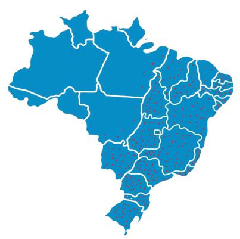
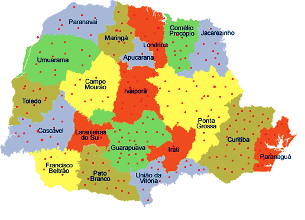

Nossos Pontos de Coleta: Onde Fazer Sua Doação
Bem-vindo à página de Pontos de Coleta da Campanha "Doação Sem Fronteiras"! Aqui, você encontrará informações essenciais sobre os locais onde você pode fazer sua doação. Cada um desses pontos de coleta representa um elo fundamental em nossa rede de solidariedade, permitindo que suas contribuições cheguem a quem mais precisa.
Nossa missão é tornar a doação tão conveniente e acessível quanto possível para todos. Acreditamos que cada gesto de bondade faz a diferença, e é por isso que estabelecemos diversos pontos estrategicamente localizados para receber suas doações. Cada item que você doa ajuda a criar um impacto positivo e a espalhar esperança em nossa comunidade e além.

Os pontos marcados em vermelho representam os locais no qual estamos presentes!
O mapa acima representa os locais no qual estamos presentes no estado do Paraná!